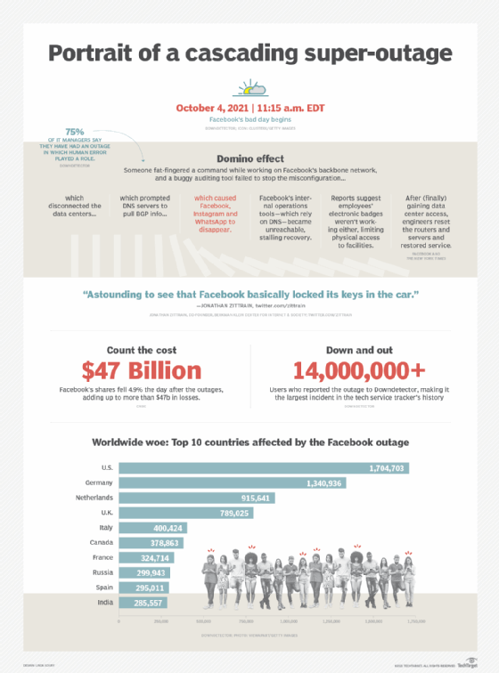

Cascading Super Outage
This chart shows more details about the global cascading super outage in 2021, especially the steps that turned a small maintenance mistake into a cascading reaction. This mistake broke the connection to the data centers and caused the apps to disappear from the internet. More than 14 million people could not use the apps for many hours, and Facebook lost about 47 billion dollars because of the outage. The countries most affected were the United States, Germany, Netherlands, U.K., Italy, Canada, France, Russian, Spain and India. It was one of the biggest internet problems in history, and it showed how one small error can cause a very big global outage!
